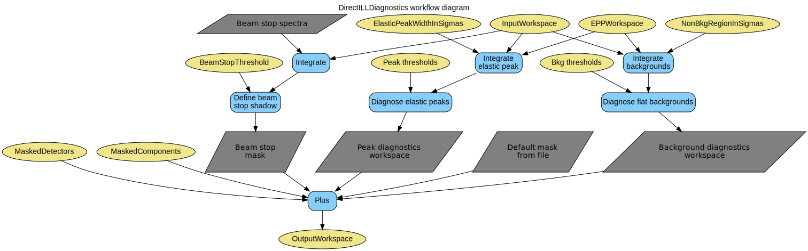

\(\renewcommand\AA{\unicode{x212B}}\)
DirectILLDiagnostics v1¶
{kind=link}
DirectILLDiagnostics dialog.¶
Summary¶
Perform detector diagnostics and masking for the direct geometry TOF spectrometers at ILL.
See Also¶
Properties¶
Name |
Direction |
Type |
Default |
Description |
|---|---|---|---|---|
InputWorkspace |
Input |
Mandatory |
A ‘raw’ workspace from DirectILLCollectData to calculate the diagnostics from. |
|
OutputWorkspace |
Output |
Mandatory |
A diagnostics mask workspace. |
|
Cleanup |
Input |
string |
Cleanup ON |
What to do with intermediate workspaces. Allowed values: [‘Cleanup ON’, ‘Cleanup OFF’] |
SubalgorithmLogging |
Input |
string |
Logging OFF |
Enable or disable subalgorithms to print in the logs. Allowed values: [‘Logging OFF’, ‘Logging ON’] |
EPPWorkspace |
Input |
Table workspace containing results from the FindEPP algorithm. |
||
ElasticPeakDiagnostics |
Input |
string |
Peak Diagnostics AUTO |
Enable or disable elastic peak diagnostics. Allowed values: [‘Peak Diagnostics AUTO’, ‘Peak Diagnostics ON’, ‘Peak Diagnostics OFF’] |
ElasticPeakWidthInSigmas |
Input |
number |
3 |
Integration half width of the elastic peak in multiples of ‘Sigma’ in the EPP table. |
ElasticPeakLowThreshold |
Input |
number |
Optional |
Multiplier for lower acceptance limit used in elastic peak diagnostics. |
ElasticPeakHighThreshold |
Input |
number |
Optional |
Multiplier for higher acceptance limit used in elastic peak diagnostics. |
ElasticPeakErrorThreshold |
Input |
number |
Optional |
To fail the elastic peak diagnostics, the intensity must also exceed this number of error bars with respect to the median intensity. |
BkgDiagnostics |
Input |
string |
Bkg Diagnostics AUTO |
Control the background diagnostics. Allowed values: [‘Bkg Diagnostics AUTO’, ‘Bkg Diagnostics ON’, ‘Bkg Diagnostics OFF’] |
NonBkgRegionInSigmas |
Input |
number |
10 |
Width of the range excluded from background integration around the elastic peaks in multiplies of ‘Sigma’ in the EPP table |
NoisyBkgLowThreshold |
Input |
number |
Optional |
Multiplier for lower acceptance limit used in noisy background diagnostics. |
NoisyBkgHighThreshold |
Input |
number |
Optional |
Multiplier for higher acceptance limit used in noisy background diagnostics. |
NoisyBkgErrorThreshold |
Input |
number |
Optional |
To fail the background diagnostics, the background level must also exceed this number of error bars with respect to the median level. |
BeamStopDiagnostics |
Input |
string |
Beam Stop Diagnostics AUTO |
Control the beam stop diagnostics. Allowed values: [‘Beam Stop Diagnostics AUTO’, ‘Beam Stop Diagnostics ON’, ‘Beam Stop Diagnostics OFF’] |
BeamStopThreshold |
Input |
number |
0.67 |
Multiplier for the lower acceptance limit for beam stop diagnostics. |
DefaultMask |
Input |
string |
Default Mask ON |
Enable or disable instrument specific default mask. Allowed values: [‘Default Mask ON’, ‘Default Mask OFF’] |
MaskedDetectors |
Input |
long list |
List of spectra to mask. |
|
MaskedComponents |
Input |
str list |
List of instrument components to mask. |
|
OutputReportWorkspace |
Output |
Output table workspace for detector diagnostics reporting. |
||
OutputReport |
Output |
string |
Diagnostics report as a string. |
Description¶
This algorithm performs detector diagnostics and masking. It is part of ILL’s direct geometry data reduction suite. The diagnostics are calculated using the counts from InputWorkspace which is preferably the raw workspace provided by the OutputRawWorkspace property of DirectILLCollectData. The output is a special mask workspace which can be further fed to DirectILLReduction to mask the detectors diagnosed as bad. Optionally, an instrument specific default mask, a beam stop mask and/or a user specified hard mask given by MaskedDetectors or MaskedComponents can be added to the diagnostics mask.
A workflow diagram for the diagnostics is shown below:
Diagnostics performed¶
The algorithm performs two tests for each spectrum in InputWorkspace: elastic peak diagnostics and flat background diagnostics. Basically both tests calculate the median of the test values over all spectra, then compare the individual values to the median. For more detailed information, see MedianDetectorTest.
Elastic peak diagnostics¶
The EPP table given in EPPWorkspace and the value of ElasticPeakWidthInSigmas are used to integrate the spectra around the elastic peaks, giving the elastic intensities. The intensities are further normalised by the opening solid angles of the detectors, given by SolidAngle before the actual diagnostics.
Flat background diagnostics¶
Similarly to elastic peak diagnostics, EPPWorkspace and NonBgkRegionInSigmas are used to integrate the time-independent background regions of InputWorkspace. NonBkgRegionInSigmas is a factor applied to the ‘Sigma’ column in EPPWorkspace and this interval around the elastic peak positions is excluded from the integration. No opening angle corrections are applied to the background diagnostics.
Beam stop¶
The shadow cast on the detectors by a beam stop can be masked by the diagnostics, as well. This functionality is automatically enabled when ‘beam_stop_diagnostics_spectra’ instrument parameter is defined and can be disabled by BeamStopDiagnostics. The algorithm tries to mask a continuous region within the spectra listed in ‘beam_stop_diagnostics_spectra’. The BeamStopThreshold property can be used to fine-tune the operation.
The ‘beam_stop_diagnostics_spectra’ instrument parameter lists ranges of spectrum numbers. Each range should cover a region of a physical detector tube, part of which is behind the beam stop.
The masking procedure proceeds as follows:
Pick a range from ‘beam_stop_diagnostics_spectra’.
Integrate the spectra within the range.
Divide the range into two halves from the middle.
Pick one of the halves, take the maximum integrated value.
Starting from the spectrum containing the maximum value, and stepping towards the center of the range, find the first spectrum where the integrated intensity is less than the maximum intensity multiplied by BeamStopThreshold. Lets call this the threshold spectrum.
Mark all spectra from the middle of the range to the threshold spectrum as masked.
Repeat for the other half.
Default mask¶
The default mask file is defined by the ‘Workflow.MaskFile’ instrument parameter.
Currently, there is a default mask available for ILL’s IN5 and PANTHER instruments.
Diagnostics reporting¶
The optional OutputReportWorkspace property returns a table workspace summarizing the diagnostics. The table has six columns:
‘WorkspaceIndex’
‘UserMask’: Holds non-zero values for spectra masked by the default mask, MaskedDetectors and MaskedComponents.
‘ElasticIntensity’: Holds the value of integrated elastic peaks used for the diagnostics.
‘IntensityDiagnosed’: Holds non-zero values for spectra diagnosed as ‘bad’ in elastic peak diagnostics.
‘FlagBkg’: Holds the value of the flat backgrounds used for the diagnostics.
‘FlatBkgDiagnosed’: Non-zero values in this column indicate that the spectrum did not pass the background diagnostics.
The columns can be plotted to get an overview of the diagnostics.
Additionally, a string listing the masked and diagnosed detectors can be accessed via the OutputReport property.
Defaults and ILL’s instrument specific values¶
The following settings are used when not explicitly overwritten by the algorithm’s properties or the IPFs of non-ILL instruments:
Property |
IN4 |
IN5 |
IN6 |
PANTHER |
SHARP |
Default |
|---|---|---|---|---|---|---|
ElasticPeakDiagnostics |
Peak Diagnostics ON |
Peak Diagnostics OFF |
Peak Diagnostics ON |
Peak Diagnostics OFF |
Peak Diagnostics ON |
Peak Diagnostics ON |
ElasticPeakLowThreshold |
0.1 |
0.1 |
0.45 |
0.1 |
0.1 |
0.1 |
ElasticPeakHighThreshold |
3.0 |
3.0 |
3.0 |
3.0 |
3.0 |
3.0 |
ElasticPeakErrorThreshold |
3.3 |
3.3 |
3.3 |
3.3 |
3.3 |
3.3 |
BkgDiagnostics |
Bkg Diagnostics ON |
Bkg Diagnostics OFF |
Bkg Diagnostics ON |
Bkg Diagnostics OFF |
Bkg Diagnostics OFF |
Bkg Diagnostics ON |
NoisyLowThreshold |
0.1 |
0.1 |
0.1 |
0.1 |
0.1 |
0.1 |
NoisyBkgHighThreshold |
3.3 |
3.3 |
3.3 |
3.3 |
3.3 |
3.3 |
NoisyBkgErrorThreshold |
3.3 |
3.3 |
3.3 |
3.3 |
3.3 |
3.3 |
BeamStopDiagnostics |
Beam Stop Diagnostics OFF |
Beam Stop Diagnostics ON |
Beam Stop Diagnostics OFF |
Beam Stop Diagnostics ON |
Beam Stop Diagnostics OFF |
Beam Stop Diagnostics OFF |
Usage¶
For usage of this algorithm as part of the direct geometry data reduction, check the examples here.
Note
To run these usage examples please first download the usage data, and add these to your path. In Mantid this is done using Manage User Directories.
Example - Diagnostics on IN4 workspace
DirectILLCollectData(
Run='ILL/IN4/087283-087290.nxs',
OutputWorkspace='preprocessed',
OutputRawWorkspace='raw', # Needed for the diagnostics
OutputEPPWorkspace='epps' # Needed for the diagnostics
)
diagnostics = DirectILLDiagnostics(
InputWorkspace='raw', # Use 'raw' rather than 'preprocessed' for background diagnostics
OutputWorkspace='mask', # A special MaskWorkspace
EPPWorkspace='epps',
MaskedComponents='rosace',
OutputReportWorkspace='diagnostics_report'
)
print(diagnostics.OutputReport)
Output:
Spectra masked by default mask file:
None
Spectra masked by beam stop diagnostics:
None
Additional spectra marked as bad by elastic peak diagnostics:
13, 40, 51, 64, 72-73, 78-79, 81-83, 100-101, 139, 150-151, 165, 173, 180-181, 183-184, 213, 239-240, 264, 272-273, 278-279, 281-283, 300-308, 313-320, 325-331, 337-344, 348-354, 361-366, 373-376, 378, 385-391
Additional spectra marked as bad by flat background diagnostics:
13, 100-101, 132, 213, 300-309, 313-319, 321, 325-331, 337-343, 345, 348-357, 361-367, 373-378, 381, 385-391
Example - Default and beam stop masks on IN5 workspace
# On IN5 we don't usually diagnose the pixels, but apply
# a hark mask + beam stop mask.
DirectILLCollectData(
Run='ILL/IN5/104007.nxs',
OutputWorkspace='preprocessed',
)
DirectILLDiagnostics(
InputWorkspace='preprocessed', # Any IN5 workspace goes, doesn't have to be 'raw'
OutputWorkspace='mask', # A special MaskWorkspace
OutputReportWorkspace='report'
)
# Read some data from the report table workspace
report = mtd['report']
default_column = report.column('DefaultMask')
beam_stop_column = report.column('BeamStopMask')
print('Total number of pixels masked by default mask: {}'.format(int(sum(default_column))))
print('Total number of pixels masked under beam stop: {}'.format(int(sum(beam_stop_column))))
Total number of pixels masked by default mask: 7261
Total number of pixels masked under beam stop: 2457
The figure below shows the mask produced by the IN5 example script above. The green pixels show the default hard mask and the beam stop.

Categories: AlgorithmIndex | ILL\Direct | Inelastic\Reduction | Workflow\Inelastic
Source¶
Python: DirectILLDiagnostics.py